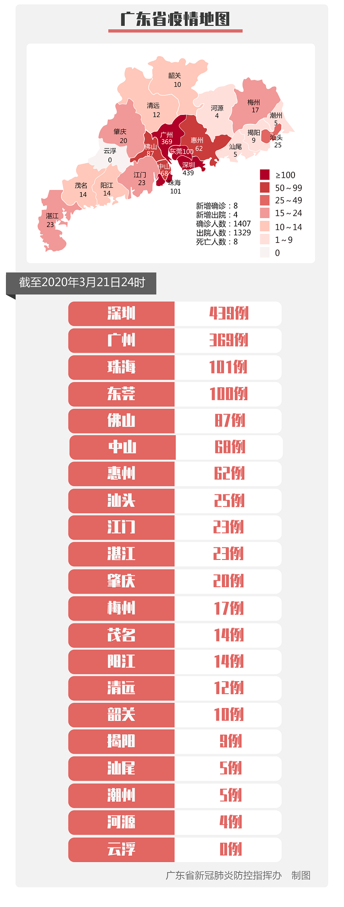

广州公布境外输入关联病例详情：系土耳其输入病例密切接触者
原文链接 备份链接 “ 3月21日0—24时，31个省（自治区、直辖市）和新疆生产建设兵团报告新增确诊病例46例，其中45例为境外输入病例，唯一一例本土新增病例来自广东省，系首例境外输入关联病例。 ” 3月21日0—24时，31个省（自治 …
【财新网】（记者 王婧 黄姝伦）广东省卫健委今日（3月22日）通报，广州出现一例境外输入关联病例。这是中国境内首次通报境外输入关联病例。
广州市卫健委通报了具体情况。该病患姓金，现年54岁。3月17日起，金某自觉肌肉酸痛、乏力、无发热，一直在家休息。3月20日下午，金某前往医院就诊，新冠病毒核酸检测呈阳性。当晚，金某接受隔离治疗。3月21日凌晨，金某复核新冠病毒核酸阳性后确诊。
3月21日晚间，金某的活动范围在网络流传。他住在广州市越秀区某小区，工作地在1.1公里外的长城大厦。据长城大厦防疫防控领导小组办公室公告，大厦从3月21日起禁止所有人员进入，开放时间另行通知。
3月21日，金某确诊后，与他有密切接触的18名人士被隔离，其中一名是往返于土耳其的服装批发商林某，现年34岁。
广州是国际服装商贸之都，纺织、服贸商圈集中在越秀区、海珠区，吸引全球客商，各大服装城已于近期复工。
广州市卫健委通报称，1月22日至3月8日，林某在土耳其伊斯坦布尔出差。3月9日晚，林某从伊斯坦布尔出发，经泰国曼谷转机，于当天深夜抵达广州白云机场入境，机场检测体温正常。
“按当时入境人员管理规定，林某不属于入境重点排查和社区健康服务管理对象。”通报称，林某随后从机场乘坐朋友私家车返回家中。回国后，她大部分时间在家，偶尔在家附近活动，全程佩戴口罩。金某确诊后，疾控部门对林某进行采样检测，随后林某确诊。两名与林某密切接触的人士，亦已集中隔离医学观察。
全球疫情愈演愈烈，截至3月21日，境外累计确诊已经突破22万例，遍布181个国家和地区。土耳其横跨欧亚大陆，近期确诊病例数激增。据中国驻土耳其大使馆3月21日通报，截至3月20日，土耳其累计确诊670例，死亡9例。
“中国面临疫情‘倒灌’新挑战，前段时间好像‘轻舟已过万重山’，但疫情远未结束，国外总病例数已经超过了中国。”美国外交关系委员会（Council on Foreign Relations）全球卫生问题高级研究员黄严忠回复财新记者称，众多华裔、留学生归国心切，中国成了“避风港”，不同国家防控措施各异，给遏制新冠病毒全球大流行带来难题。
在3月21日的新闻发布会上，国家卫生健康委新闻发言人、宣传司副司长米锋称，自3月11日世卫组织宣布疫情大流行以来，内地累计境外输入病例从85例增长至269例，增幅为216%，快于同期全球累计确诊病例98%的增幅。（详见财新网报道“境外回流病例增幅加大 英国成北京最大输入来源”)
在中国，境外输入病例当下已成为新增病例的主体。
截至3月21日24时，全国累计报告境外输入确诊病例314例。广东是境外输入病例大省。据广东省卫健委数据，截至3月21日24时，全省累计报告境外输入病例56例，约为全国的五分之一。在广州此次发生境外输入关联病例之前，广东省已15天无本地确诊病例，20天无省外输入确诊病例。
在土耳其感染病毒却无症状的林某，凸显了前期防控疏漏。部分无症状者亦是疫情的隐形传染源，仅凭体温检测和流行病学调查防不胜防。广东边境防控从3月19日零时起升级，凡境外来粤返粤人员入境后，均应接受免费病毒核酸检测。（详见财新网报道“广东口岸防输入扩大核酸检测面入境者免费检测”）
此外，自3月21日零时起，对所有从境外（不含港澳台）经广东口岸入境的人员，以及经港澳台地区和省外口岸入境来粤且来粤前14天内有国外旅居史的人员，但凡目的地为广东的，无论外国公民还是中国公民，均一视同仁，一律实施14天居家或集中隔离医学观察。
有接近海关的人士告诉财新记者，对于处于潜伏期、无症状患者，入境时如无明显发热症状的患者，的确有漏检风险。“一下飞机就隔离”是最保险的做法。近期，上海、广州等国际航线密集的关口压力陡增，追踪入境者应由各地方政府跟进执行。
境外输入病例“倒灌”，一度引发疫情“二次暴发”的担忧。在国新办3月16日举办的发布会上，北京协和医院感染内科副主任曹玮称，当下疫情已不再是中国或者其他某一国家的地区事务，疫情控制无法单独依赖一国的努力。经过三个月的抗疫，中国疫情第一次高峰已经过去。“目前来看，不用过度担心中国疫情第二次暴发。”曹玮认为，在中国的各项防控措施下，疫情第二次暴发的可能性较小。考虑到近期出现的输入性病例，中国新增病例可能会保持在较低水平，并持续相当长一段时间。

此文限时免费阅读。感谢热心读者订阅财新通，支持新闻人一线探求真相！成为财新通会员，畅读财新网！
更多报道详见：【专题】新冠肺炎防疫全纪录（实时更新中）
原文链接 备份链接 “ 3月21日0—24时，31个省（自治区、直辖市）和新疆生产建设兵团报告新增确诊病例46例，其中45例为境外输入病例，唯一一例本土新增病例来自广东省，系首例境外输入关联病例。 ” 3月21日0—24时，31个省（自治 …
原文链接 备份链接 【财新网】（记者 赵今朝）国内新增病例持续低位，但境外输入病例呈现快速增长态势，疫情倒灌的危险加剧。目前，到中国境外游客中，海外留学生引人关注，且数量较多。 北京已连续15天无新增报告本地确诊病例，境外输入病例留学生超 …
原文链接 备份链接 【财新网】（记者 丁捷 综合）海外疫情蔓延，境外新冠肺炎累计确诊超11万例，已超过中国。多国高校纷纷响应停课，不少海外留学生归国心切，回国一票难求。而面对不断增加的输入性病例、污名化言论、防境外输入升级措施等，对于尚未 …
原文链接 备份链接 图片来源：视觉中国 记者：牛其昌 “ 随着国内新增确诊病例数明显减少，多地已纷纷下调疫情应急响应等级。但鉴于全球新冠肺炎疫情防控形势的严峻性，疾控部门已经把境外疫情评估纳入工作范畴。 ” 新冠肺炎疫情正在全球范围内加速 …
原文链接 备份链接 澎湃新闻 综合报道 中国国内疫情逐渐好转，但这个时候全球各地却不断拉响警报，新冠肺炎全球风险级别由高风险提升至非常高。 据世界卫生组织官网报道，世卫组织总干事谭德塞2日表示，中国的新冠肺炎病例数量在持续下降，在过去24 …